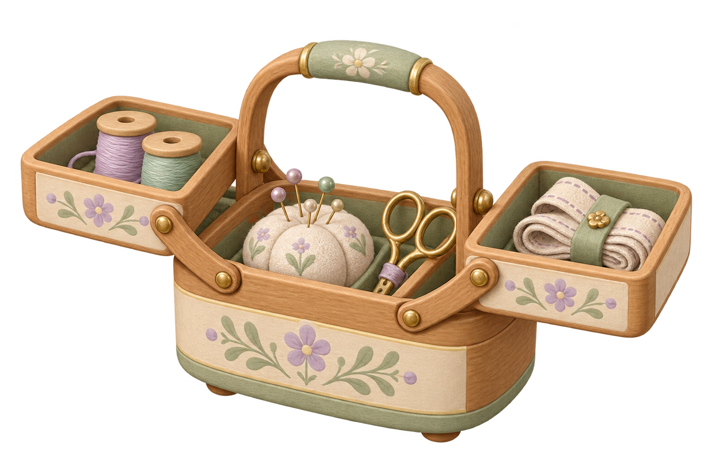

裁縫道具箱：単一ピン接合の形状見本
木の板に貫通穴を開け、中央の腕・軸・留め輪・両端の蓋・角度止めを組み合わせた、接合部分だけの独立見本です。台と接合部はこの見本自身の構造です。前回の外部ガイドは使っていません。道具箱全体の開閉、留め輪の遊びを含む実荷重・摩擦・耐久性、身体との接触、入手・通常配置・保存は未確認です。
描画の準備中
単位はゲーム内の形状単位です。透明に見える穴は実際にくり抜いた形状で、検査表示は部品の削除や接合の合格を意味しません。

形状・接触の検査値と未確認範囲
保持した未加工の道具箱原画

SHA 6afc65a4…：新原画や新しい完成素材として数えません。前回の外部ガイド付き見本も保持しています。